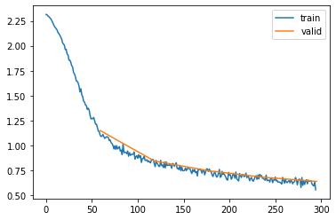

from datasets import load_dataset,load_dataset_builder
from nntrain.dataloaders import DataLoaders, hf_ds_collate_fnLearner
Module containing helper functions and classes around the Learner
PublishEvents
PublishEvents (name)
Initialize self. See help(type(self)) for accurate signature.
CancelBatchException
Common base class for all non-exit exceptions.
CancelEpochException
Common base class for all non-exit exceptions.
CancelFitException
Common base class for all non-exit exceptions.
Learner
Learner (model, dls, loss_fn, optim_class, lr, subs)
Initialize self. See help(type(self)) for accurate signature.
Subscriber
Subscriber ()
Initialize self. See help(type(self)) for accurate signature.
MetricsS
MetricsS (**metrics)
Initialize self. See help(type(self)) for accurate signature.
DeviceS
DeviceS (device)
Initialize self. See help(type(self)) for accurate signature.
LRFindS
LRFindS (mult=1.25)
Initialize self. See help(type(self)) for accurate signature.
MomentumLearner
MomentumLearner (model, dls, loss_fn, optim_class, lr, subs, mom=0.85)
Initialize self. See help(type(self)) for accurate signature.
ProgressS
ProgressS (plot=False)
Initialize self. See help(type(self)) for accurate signature.
Example usage:
name = "fashion_mnist"
ds_builder = load_dataset_builder(name)
hf_dd = load_dataset(name)
bs = 1024
n_in = 28*28
n_h = 50
n_out = 10
lr = 0.01
dls = DataLoaders.from_hf_dd(hf_dd, batch_size=bs)Reusing dataset fashion_mnist (/root/.cache/huggingface/datasets/fashion_mnist/fashion_mnist/1.0.0/8d6c32399aa01613d96e2cbc9b13638f359ef62bb33612b077b4c247f6ef99c1)def get_model():
layers = [nn.Linear(n_in, n_h), nn.ReLU(), nn.Linear(n_h, n_out)]
return nn.Sequential(*layers)metrics = MetricsS(accuracy=tem.MulticlassAccuracy())
progress = ProgressS(True)
device = DeviceS(device)
l = MomentumLearner(get_model(), dls, F.cross_entropy, torch.optim.SGD, lr, [metrics, progress, device])
l.fit(5)| epoch | mode | loss | accuracy |
|---|---|---|---|
| 0 | train | 1.763 | 0.458 |
| 0 | eval | 1.151 | 0.647 |
| 1 | train | 0.949 | 0.669 |
| 1 | eval | 0.846 | 0.685 |
| 2 | train | 0.777 | 0.719 |
| 2 | eval | 0.748 | 0.725 |
| 3 | train | 0.697 | 0.757 |
| 3 | eval | 0.683 | 0.762 |
| 4 | train | 0.643 | 0.780 |
| 4 | eval | 0.641 | 0.778 |
